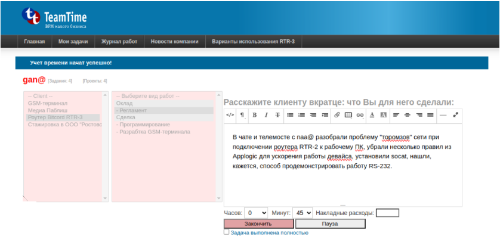

4. Policies for Teamwork › Team Regulations › summary
Being in the right place at the right time determines the success of teamwork.
Every weekday from 15:00 to 17:00 Moscow time is “chat time”, when employees ask each other pressing work questions in personal chats and video calls.
Use your right not to answer questions outside this time, protecting your concentration on your own tasks and remembering your promise to complete the work plan you set for the end of the month.
If you had a conversation during chat time, be sure to log the time spent in TeamTime with a brief summary of the problem discussed:
